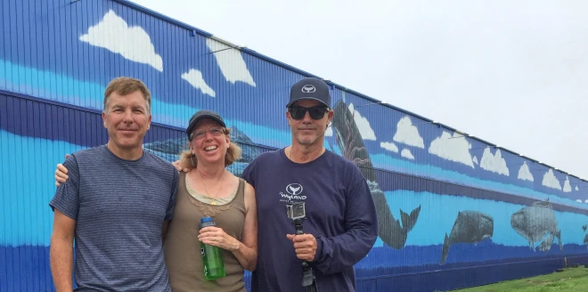
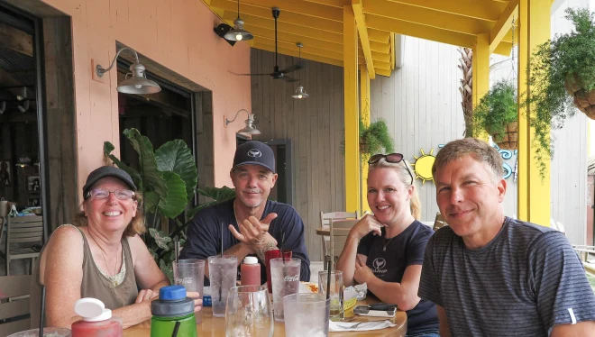

In Search of Wyland Walls

All of our trips tracking down Walls have been fun and adventurous, but none as much as going to see “Marine Life off the Gulf”.
We had no travel plans to see walls this year but a few weeks ago while at a Wyland show in Carmel we learned that he would be refreshing the wall in Destin, FL. It would be hard to fit the trip into our work schedule but how could we pass up an opportunity to see Wyland actually paint a wall!
The weather forecast for the week was pretty grim. On Monday we got to see the wall but by 11am it started raining and we proceeded to get 12.6″ of rain that day. That eliminated any chance to see him paint on Monday. Without anything else planned, we decided to visit the Wyland Gallery in Destin and ended up running into Wyland there. As it was pouring down rain we were the only customers there and got to talk to him. We got some insight into the walls and his Giant Sculpture project. It was pretty fun to get some one-on-one time with him.
Tuesday the forecast was better and we knew there was a good chance we would get to see him paint. The painters that were doing the background had almost completed their work and the was was ready for him to start. As he was doing his first walk-around of the wall we were able to get our wall picture with him.
Everything just got better from there. We got to see the master at work. The building is absolutely huge and it’s quite a coordination task to paint from a moving cherry-picker. Watching him paint from the ground was great but then he took us up on the cherry picker to watch him paint from up high which was fantastic. We lunch with him and got to hear some great stories of his travels. Over the course of the day we heard so many stories and just had the greatest time.
On Wednesday a few classes of school kids, middle school and elementary, came by to hear Wyland talk and to paint with it. It was very special to see him interact with the kids. He was so energized by them and buzzing around while the kids were all painting.
A very special trip that we will never forget.

Mid-Bay Marina
688 Regatta Blvd.
Destin, Florida
Marine Life Mural: 1,480 feet Long x 60 Feet High
Rooftop US Flag Mural: 290 Feet Long x 152 Feet High
Dedicated Oct. 17, 2001
Excerpt from @wylandfoundation on Instagram
The epic nine-day five and one quarter acre project at the Mid-Bay Marina in Destin captured the imagination of thousands of people along the Gulf Coast. When the second phase of the mural was completed it was a much larger mural than the world record mural Wyland had painted a few years earlier in Long Beach, California. Among the images Wyland painted on the Destin wall was a pod of nine pilot whales to honor a pod of whales that beached themselves in East Escambia County on October 11, 2001. The depiction of the pilot whales wasn’t the only example of commemoration that Wyland showed. In the wake of the tragic events of September 11, he announced that his team would paint one of the world’s largest flags on the 2-acre roof of the marina. The flag is 44,080-square feet!
Between Wyland’s marine life mural on the sides of the marina and the flag on top, the entire project ranks among the world’s largest works of art found anywhere covering a total of 71,560 square feet and requiring at over 1,000 gallons of paint!
Over 10,000 community volunteers came together to help organize the massive painting event. They were joined by thousands more spectators, including families and school children from a 150-mile radius, who painted over 100 smaller murals.